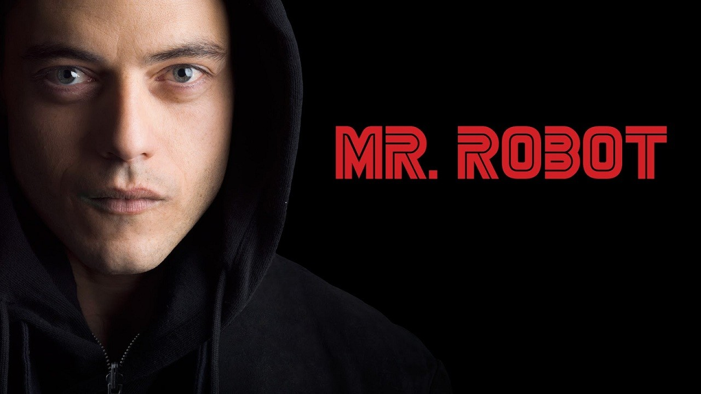
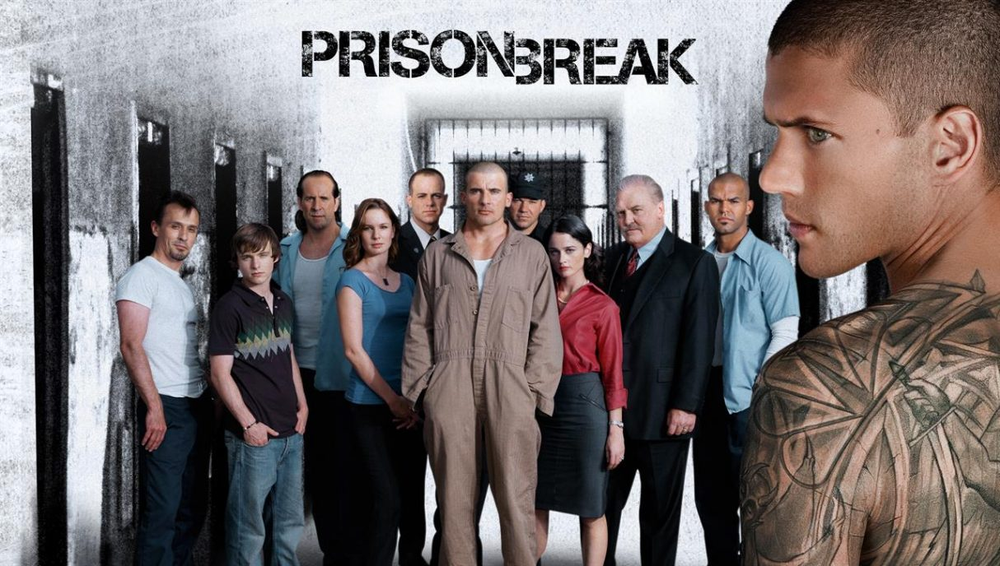

Merhaba, Ben Mücahit. Basketbol oynamaktan hoşlanıyorum...
Vikings

Vikings, "Vikingler" tarihsel drama türünde bir Kanada-İrlanda ortak yapımı televizyon dizisi.Yazarlığını ve yapımcılığını Michael Hirst'in yaptığı dizi History kanalında yayınlanmaktadır.ABD ve Kanada'da 3 Mart 2013 günü yayına başlamıştır.
Mr. Robot
Mr. Robot, Sam Esmail tarafından kaleme alınmış Amerikan psikolojik gerilim-dram televizyon dizisi. Dizinin baş karakteri Elliot Alderson (Rami Malek), sosyal anksiyete bozukluğu, çoklu kişilik bozukluğu, klinik depresyon, şizofreni ve uyuşturucu bağımlılığı ile boğuşan bir siber güvenlik uzmanı ve hacker'dır. Elliot, "Mr. Robot" (Christian Slater) lakabıyla tanınan bir anarşist tarafından "fsociety" adlı hacktivist gruba katılmaya davet edilir. Grubun amacı, dünyanın en büyük şirketler topluluğu olana E Corp'un finansal verilerini şifreleyerek tüm borç kayıtlarını yok etmektir.
Prison Break
Büyük Kaçış (Orijinal adı: Prison Break), ABD yapımı bir aksiyon dizisi. Hikâyesi Paul Scheuring tarafından ortaya atılmış ve FOX şirketi tarafından 2005 yılında dizi olarak hayatına adım atmıştır. Dizi genel olarak işlemediği bir suçtan dolayı idam cezası almış Lincoln Burrows (Dominic Purcell) 'u ve Lincoln'ün kardeşi Michael Scofield (Wentworth Miller)'ın kardeşini kurtarmak için tüm yasal yolların tükendiğini fark edip onu hapishaneden çıkarmak için bir kaçış planı yapması ve sonrasında gelişen olayları konu alır.